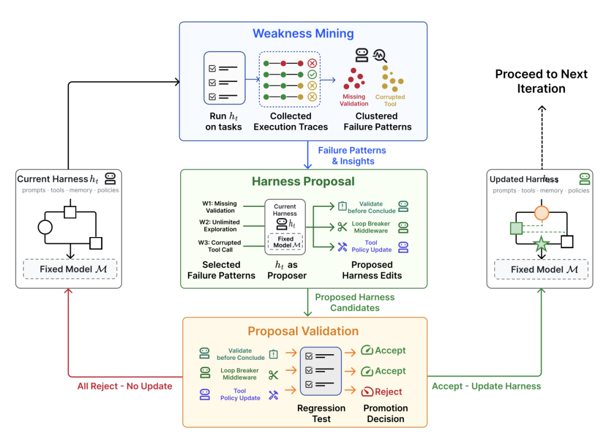
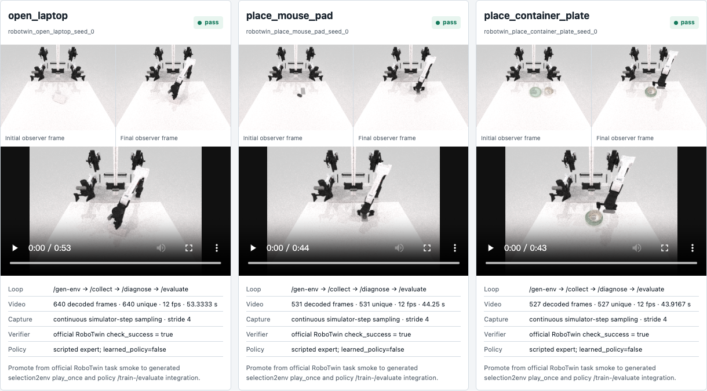
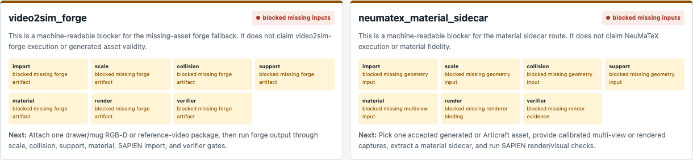

PEARL as an Embodied Harness System
[INFERRED][CONFIDENCE: HIGH]Scoped paper framing backed by controlled harness, memory, second-simulator, and learned-policy evidence.
Acceptance 6 / 6[COMPUTED] [CONFIDENCE: HIGH] Framing plus four bounded evidence classes
Working paper claim
Scoped: PEARL is an embodied harness system that versions and evaluates the experimental machinery around an embodied model or policy.
Priority claim
Not established: first real embodied harness system
Acceptance Audit
Six paper-framing requirements mapped to artifacts.
| # | Requirement | Status | Primary evidence |
|---|---|---|---|
| 01 | Write a one-page thesis with precise scope and no unsupported priority overclaim. | pass | docs/embodied_harness_thesis.md#one-page-thesis |
| 02 | Map the full h_t execution, weakness, proposal, regression, promotion, and h_{t+1} loop into PEARL terms. | pass | artifacts/embodied_harness/embodied_harness_spec.json#loop_steps |
| 03 | Define embodied reset, observation/action, tools, safety, traces, validation, data, memory, and rollback surfaces. | pass | artifacts/embodied_harness/embodied_harness_spec.json#embodied_surfaces |
| 04 | Compare against LLM coding harnesses, ASPIRE, ENPIRE, RoboTwin/Text2Env, and standard VLA evaluation. | pass | artifacts/embodied_harness/embodied_harness_spec.json#novelty_table |
| 05 | Draft a figure caption and architecture diagram brief. | pass | artifacts/embodied_harness/embodied_harness_spec.json#figure |
| 06 | Route implementation requirements into /gen-env, /collect, /evaluate, /diagnose, and /transfer. | pass | artifacts/embodied_harness/embodied_harness_spec.json#command_routing |
One-Page Thesis
Precise system claim with causal attribution control.
PEARL treats embodied experimentation as a versioned harness around a model or policy under test, rather than treating every failure as permission to change the policy, task, scene, simulator, and metric at once.
The harness state h_t makes reset, observations, actions, tools, adapters, validators, memory, data requirements, safety limits, and rollback explicit. Each execution emits traces that can be clustered into weaknesses and translated into a bounded candidate edit.
A candidate becomes h_{t+1} only after replay and regression gates pass under controlled attribution. Rejected candidates remain evidence, and failed policy promotion remains a valid result rather than being rewritten as success.
The current workspace includes four bounded results: a fixed-checkpoint RGB-adapter edit improves 0/3 to 3/3; failure memory selects that correction under a matched 0/3 versus 3/3 protocol; one normalized task executes five task-semantic commands in Isaac with 120 trace steps and a passing verifier; and a privileged pose-conditioned open-loop policy passes 4/4 held-out placements, 4/4 domain-randomized placements, and 3/3 fixed-placement seeds on a second task. These results do not establish publication priority, real-robot evolution, robot-policy cross-simulator transfer, or a visual language policy.
Attribution rule: During a harness-candidate regression comparison, the model or policy checkpoint, seeds, task set, and declared environment conditions stay fixed. Policy retraining is a separate versioned intervention and cannot be credited as a harness-only gain.
Bounded System Evidence
Positive results are scoped; negative and unrun obligations remain visible below.
Fixed-checkpoint harness edit
proven boundedOnly observations.runtime_color_adapter changes; checkpoint, dataset stats, seeds, placement, actions, and verifier are fixed.
Machine evidenceMemory-mediated correction
proven boundedVersioned failure memory selects the accepted identity adapter under the same fixed evaluation protocol.
Machine evidenceSecond-simulator command parity
proven boundedTask semantics transfer through primitive proxies; robot embodiment, policy, source assets, and materials do not.
Machine evidenceBounded learned-policy promotion
proven boundedPromotion is limited to a privileged, initial-pose-conditioned, open-loop learned trajectory baseline in the generated RoboTwin apple/plate task, plus fixed-placement seed holdout on can/basket. It does not promote ACT, establish visual robustness, prove language-conditioned control, or establish broad task transfer.
Machine evidenceArchitecture Figure
Original harness sketch bundled locally.

Loop Mapping
h_t to h_(t+1), with an explicit gate at every transition.
current harness h_t
versioned command, adapter, validator, memory, task-set, and rollback state
all referenced schemas, adapters, tasks, and checkpoints resolve before executionembodied task execution
/collect or /evaluate through a simulator or robot adapter
execution completion, trace completeness, and task success are recorded separatelyweakness mining
/diagnose over state, action, gripper, camera, contact, and verifier traces
the diagnosis cites concrete trace fields and distinguishes observed, not observed, and unresolvableclustered failure patterns
failure clusters linked to next data or harness requirements
clusters retain episode and artifact provenance instead of relying on a summary score aloneharness proposal
bounded proposal against one or more typed harness surfaces
proposal names the changed surface, expected effect, confounds, owner, and rollback pointerproposed edits
versioned schema, prompt, tool, adapter, validator, reset, or data-requirement patch
the diff is narrow enough to attribute and does not silently change the policy checkpoint or benchmarkregression test
schema validation, simulator replay, visual checks, and held-out evaluation
candidate and baseline use matched checkpoints, seeds, tasks, and declared environment conditionspromotion decision
accept, reject, or block candidate using declared gates
no promotion on infrastructure completion alone; task, safety, robustness, and provenance gates remain distinctupdated harness h_{t+1}
committed harness state with parent and rollback pointers
only accepted candidates change the active harness; rejected candidates remain immutable evidenceEmbodied Harness Surfaces
Physical experiment state that must be versioned.
| Surface | Required contract | Example artifacts |
|---|---|---|
| reset | robot or simulator reset state, seed, placement, calibration, and failure mode | run_state.json · scene_manifest.json |
| observations | camera views, proprioception, object state, timing, and channel conventions | camera PNG/MP4 · object_states.jsonl · HDF5 observations |
| actions | action space, controller, frequency, gripper semantics, and temporal alignment | action traces · move_events.jsonl · HDF5 action |
| tool calls | planner, simulator, renderer, asset, and validation tool inputs and outputs | events.jsonl · command envelopes |
| simulator adapters | engine, renderer, asset/material format, reset/step/verifier mapping, and access terms | openxsim_adapter_matrix.json · adapter manifest |
| safety limits | workspace, collision, velocity, contact, termination, and robot constraints | robot_constraints · safety verdict |
| real sim traces | timestamped state, action, image, contact, process, and verifier evidence | run_state.json · events.jsonl · rollout logs |
| validation rules | schema, import, physics, visual, task, robustness, and provenance gates | verifier report · success verifier · visual review |
| data requirements | failure-linked collection request with coverage, diversity, and split criteria | next_data_requirement · dataset manifest |
| memory | versioned failure, proposal, decision, and reusable debug record with provenance | diagnosis record · audit log |
| rollback | parent harness, candidate diff, rejected evidence, and restoration pointer | parent_version · rollback_pointer · commit |
Comparison And Missing Evidence
Differentiation stays a testable hypothesis.
| Comparison | Overlap | PEARL hypothesis | Implemented | Missing |
|---|---|---|---|---|
| LLM coding harnesses | execution, tests, repair, tools, memory, and regression gates | Embodied reset, observation/action timing, simulator adapters, safety, physical state traces, and task verifiers require a richer harness contract. | Typed Open X Sim commands, simulator runs, media, state traces, verifiers, a fixed-checkpoint RGB-adapter promotion, and a matched memory-mediated adapter-selection result are present. | No matched comparison against a coding-harness baseline has run. |
| ASPIRE | multimodal rollout traces, code-as-policy repair, held-out regression, and reusable skill framing | PEARL versions scene, task, adapter, data, validator, and rollback surfaces in addition to program repair. | Scene-task decoupling, command artifacts, dense traces, failure-to-data execution, and one matched failure-memory adapter-selection ablation exist. | No matched ASPIRE implementation or reusable skill-library comparison exists. |
| ENPIRE | reset, execute, verify, refine, and repeated real-world improvement loops | PEARL exposes simulation-first scene/task/adapter artifacts and transfer contracts before real-robot promotion. | RoboTwin/SAPIEN robot-action command loops and one Isaac task-semantic five-command bundle with a target verifier exist. | No real-robot harness evolution or sim-to-real transfer result exists. |
| RoboTwin/Text2Env | task generation, scene assets, simulator execution, data collection, and code repair | Text2Env becomes one /gen-env route inside a larger versioned harness with independent collection, diagnosis, evaluation, transfer, and rollback. | Selection2env, same-scene two-task execution, command schemas, benchmark bundles, an Isaac task-semantic transfer, and an observation-derived native-material roundtrip exist. | Generative scene synthesis, source-asset/material identity, and robot-policy transfer are not complete. |
| standard VLA evaluation | held-out tasks, success metrics, rollout traces, and benchmark comparison | Evaluation failures become typed harness proposals and data requirements with explicit regression and rollback gates. | The failed ACT promotion remains recorded, while a separate privileged pose-conditioned open-loop policy passes 4/4 held-out, 4/4 randomized, and 3/3 fixed-placement second-task gates. | No visual, language-conditioned, closed-loop broad task policy is established. |
Bundled Evidence
Primary-source snapshots and current implementation proof surfaces.




Implementation Routing
Requirements land on existing commands, not the project intro.
| Command | Harness surfaces | Required fields | Promotion gate | Evidence |
|---|---|---|---|---|
/gen-env | simulator adapters · validation rules · reset | scene_manifest · task_manifest · asset_manifest · success_verifier · blockers | schema, asset provenance, import, placement, visual, physics, and verifier gates | artifacts/gen_env_contract/gen_env_contract_manifest.json |
/collect | reset · observations · actions · real sim traces · data requirements | seed_plan · reset_record · state_trace · action_trace · camera_trace · dataset_manifest | trace completeness, temporal alignment, data diversity, and declared collection provenance | runs/generated_collect_apple_plate_native_sync/collection_report.json |
/evaluate | validation rules · safety limits · real sim traces · rollback | checkpoint · eval_split · verifier · per_episode_results · promotion_decision | matched checkpoint and protocol, task success, safety, held-out robustness, and provenance | artifacts/diagnosis/placement_robustness_diagnosis.json |
/diagnose | real sim traces · memory · data requirements · validation rules | failure_cluster · root_cause_hypothesis · trace_provenance · next_data_requirement · proposed_edit | diagnosis must cite trace evidence and preserve unknown or unresolvable states | artifacts/diagnosis/native_act_closed_loop_diagnosis.json |
/transfer | simulator adapters · tool calls · validation rules · rollback | source · engine_renderer · asset_format · material_system · reset_step_verifier_api · license_access · migration_difficulty | license/access, asset/material translation, reset/step/verifier parity, and smoke execution | artifacts/openxsim/openxsim_adapter_matrix.json |
Proof Obligations
Unproven system and priority claims remain explicit.
| Claim | Status | Required next evidence |
|---|---|---|
| implemented embodied harness artifact contract | proven bounded | Replicate the candidate-promotion contract beyond one fixed scene and observation adapter. |
| harness edits improve outcomes independently of policy changes | proven bounded | Repeat the matched fixed-checkpoint result on signature-disjoint placements, another task, and declared domain randomization. |
| Open X Sim supports task-semantic reuse across simulators | proven bounded | Repeat with robot embodiment, joint-action policy, source assets and materials, and at least one additional task. |
| failure memory can improve a controlled harness decision | proven bounded | Repeat across multiple independent failure classes, tasks, and null-effect controls rather than one RGB-channel repair. |
| a learned policy can pass the bounded SceneAgent promotion contract | proven bounded | Replace privileged initial-pose open-loop control with visual or language-conditioned closed-loop policies and broader task splits. |
| real-robot harness evolution | not run | Execute a safety-reviewed harness transition on hardware with calibrated reset, traces, verifier, rollback, and intervention attribution. |
| first real embodied harness system | not established | Systematic priority search, precise definition, independent related-work audit, and public timestamp evidence. |
[KNOWN][CONFIDENCE: HIGH]This spec supports a scoped PEARL embodied-harness framing, an implemented artifact contract, one fixed-checkpoint RGB-adapter causal result, one matched memory-mediated correction, one task-semantic second-simulator command bundle, and one privileged pose-conditioned open-loop policy promotion. It does not establish first-in-field priority, real-robot evolution, robot-policy cross-simulator transfer, source-asset or material parity, intrinsic neural-material recovery, or a visual language closed-loop policy.
Evidence Files
Machine-readable package, Markdown, QA, and manifest.
{kind=link}
{kind=link}